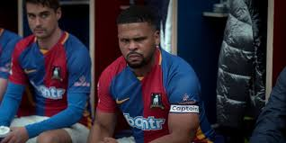
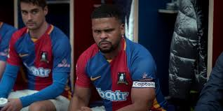
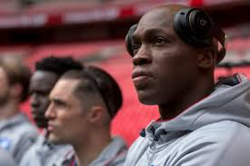
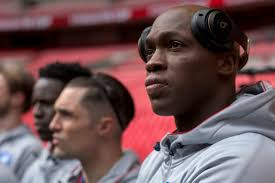

 

Dani Rojas
Um jogador mexicano extremamente positivo e entusiasta. Famoso pelo seu lema "Futebol é vida!", ele é um atacante talentoso e cheio de energia.
Roy Kent
Um ex-jogador veterano e capitão do AFC Richmond, conhecido por sua personalidade dura e comportamento direto. Depois de se aposentar, ele se torna um dos treinadores do time.
Jamie Tartt
Um jovem atacante talentoso e inicialmente egocêntrico, que começa a série como o principal artilheiro do AFC Richmond, mas passa porum grande desenvolvimento de caráter ao longo da série.
Zava
Um jogador estrela mundialmente famoso, conhecido por seu ego enorme e habilidades excepcionais no campo. Ele se junta ao AFC Richmond brevemente na terceira temporada.
Isaac McAdoo
O zagueiro do AFC Richmond, ele é respeitado por seus colegas de equipe e eventualmente se torna o capitão do time após Roy Kent.
Sam Obisanya
Um jovem jogador nigeriano que joga como lateral-direito. Ele é gentil, idealista e se torna uma das figuras centrais do time, crescendo em confiança e liderança.
Zoreaux
O goleiro do AFC Richmond, de origem canadense. Ele é leal ao time e, embora não receba tanto destaque quanto outros personagens, é uma parte importante do grupo.